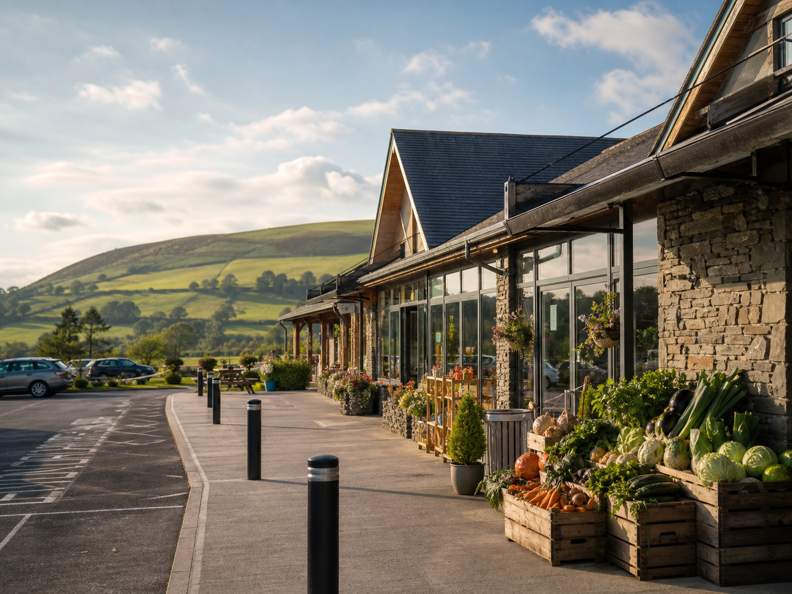
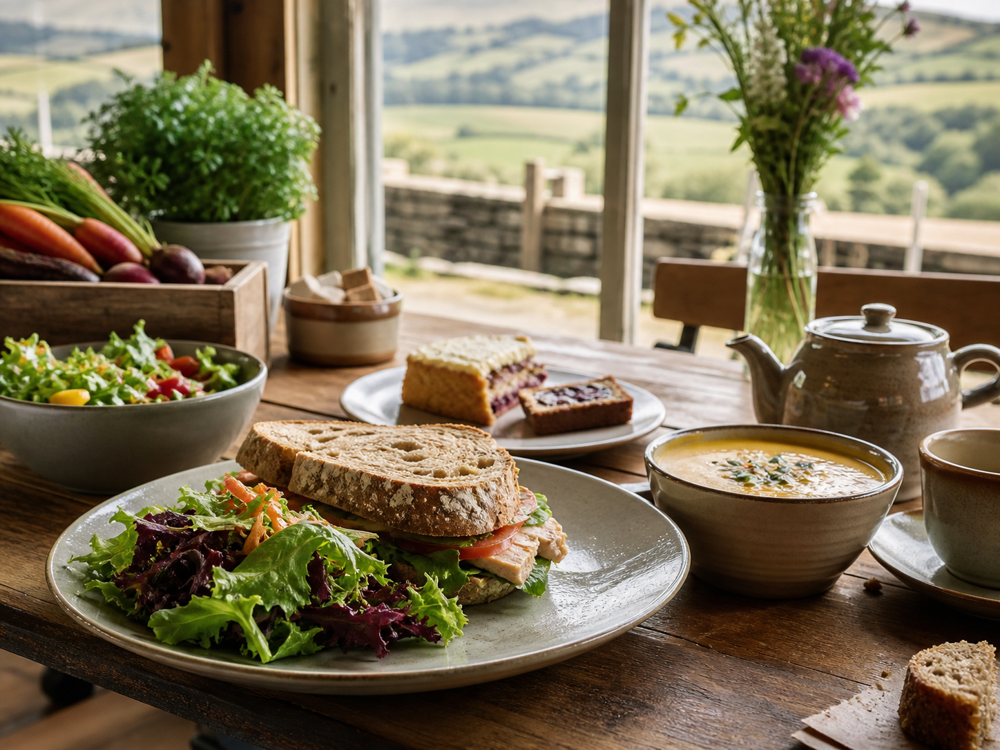
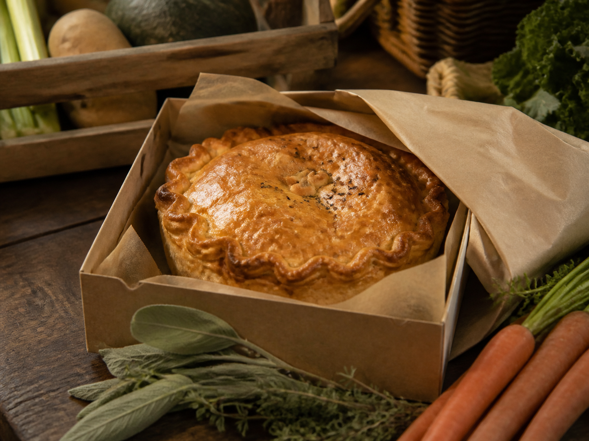
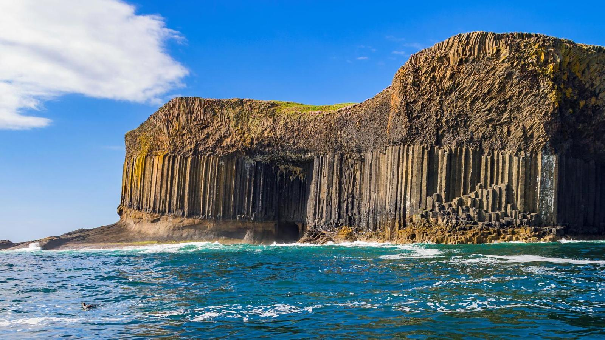
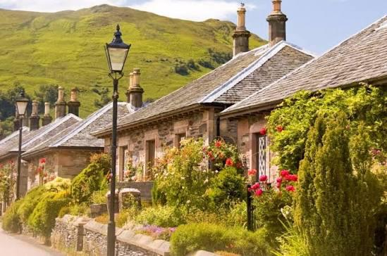
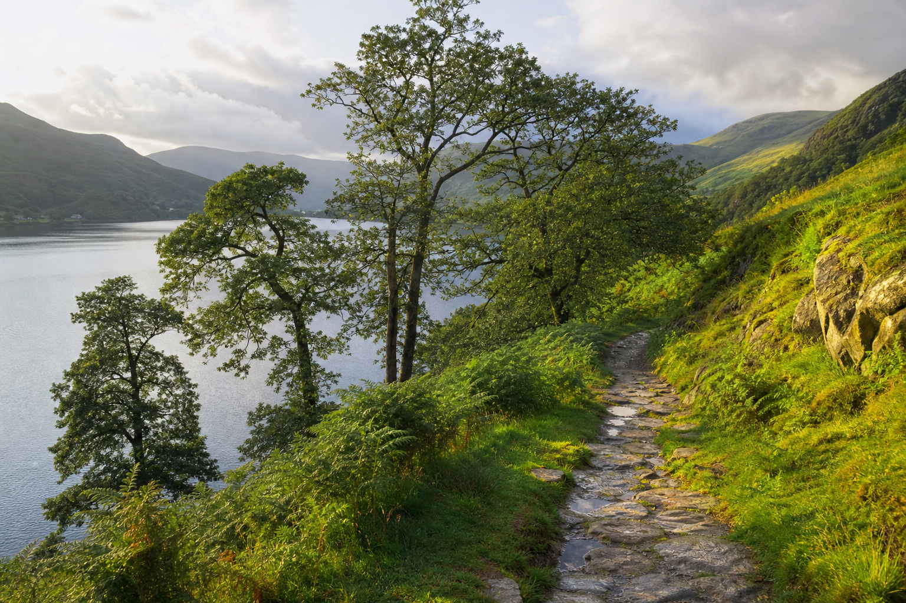
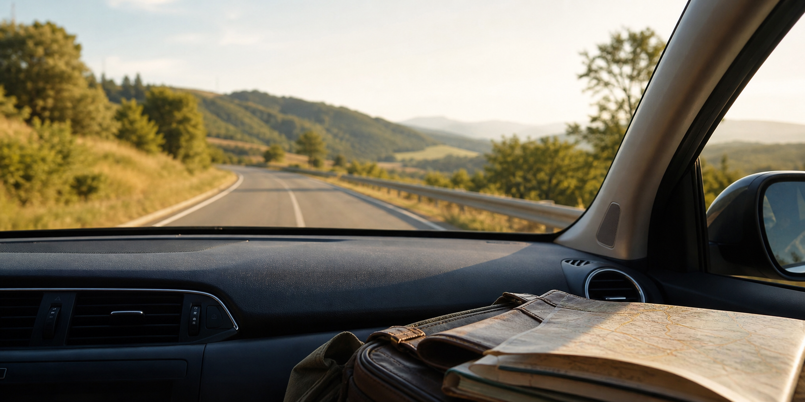

First night near Oban
First night near Oban
Wednesday 5 August
Oban via Tebay
Travel to Oban, with a very important Tebay Services stop on the way up, then check in and keep the first evening relaxed.
Alan pilgrimage stop
Tebay Services
Farmshop wander, an amazing lunch, and something excellent for dinner later.
Ideally a very serious artisan pie.



- Essential stop
- Tebay Services: farmshop, lunch, and pie provisions
- Stay
- Aspen Lodge Architect Designed B&B
- Check-in
- 16:00
- Checkout
- 10:00 on 6 August
 Ferry across
Ferry across
 Croftlee Cottage
Croftlee Cottage
Thursday 6 August
Oban to Mull
Check out, cross to Craignure, then settle into our Mull base.
- Recommended arrival
- 11:15
- Vehicle check-in closes
- 11:45
- Ferry
- 12:15-13:05 · Oban to Craignure
- Stay
- Croftlee Cottage, Ardtun
- Check-in
- From 15:00
 Wildlife sea safari
Wildlife sea safari
Friday 7 August
Wildlife Sea Safari
A day on the water from Tobermory, looking for Mull wildlife.
- Arrive by
- 12:45
- Activity
- 13:00-16:00 · Wild West Coast
- Meet
- Tobermory Harbour
- Remember
- Waterproofs, warm layers, camera
 Exploring Mull
Exploring Mull
Saturday 8 August
Explore Mull
No fixed bookings. Scenic drive, beach, wildlife, walk, cafe, food,
or wet-weather backup depending on the day.
- Plan
- Explore at our own pace
- Stay
- Croftlee Cottage

Staffa and Iona day
Sunday 9 August
Iona and Staffa
Passenger ferry to Iona, then afternoon trip to Staffa.
- Iona ferry
- Flexible return, available all day
- Staffa trip
- 13:45 · approx finish 17:45
- Check
- Exact boarding point, arrival time, parking
- Remember
- Waterproofs, walking shoes, snacks, water
Ferry back
 Ronachan apartment
Ronachan apartment
Monday 10 August
Mull to Ronachan
Check out, ferry back to Oban, then drive to Ronachan.
- Checkout
- 10:00
- Recommended arrival
- 12:35-12:45
- Vehicle check-in closes
- 13:05
- Ferry
- 13:35-14:25 · Craignure to Oban
- Stay
- Ronachan Farmhouse
- Check-in
- From 16:00
.jpeg) No proper clues yet
No proper clues yet
Tuesday 11 August
A day just for Alan
I’ve planned this one especially for you. You do not need to
organise anything, work anything out, or know where we are going
yet. Love, Nia x
- Need to know
- Early start required
- Booked
- Experience and accommodation
- Pack
- Overnight bag, warm layers, waterproofs
You can open this the day before, on 10th August.
 Arrive in Luss
Arrive in Luss

Explore Luss
Wednesday 12 August
Arrive in Luss
Breakfast, travel, another scenic journey, then arrive in Luss and wander by the loch.
- Destination later
- Luss
- Stay
- Glenview Luss
- Check-in
- 15:00-22:00
 Boat to Balmaha
Boat to Balmaha
 Conic Hill
Conic Hill
 Bowness accommodation
Bowness accommodation
 Hot tub drinks and chill
Hot tub drinks and chill
Thursday 13 August
Loch Lomond Adventure
Boat across to Balmaha, lunch at The Oak Tree Inn, then travel to Bowness-on-Windermere for hot tub drinks and chill.
- Boat out
- 10:00 · Luss to Balmaha
- Lunch
- 13:30 · The Oak Tree Inn
- Table return
- 15:00
- Boat back
- 15:30 · Balmaha to Luss
- Drive
- Approx 3 hours to Bowness-on-Windermere
- Stay
- Ferry View Studio with Hot Tub and Parking

Lake District exploring
Friday 14 August
Lake District Exploring
One final full honeymoon day for a lush Lake District wander, good food, and no rushing.
- Options
- Adventure, scenic experience, food, relaxation, wet-weather backup
- Stay
- Ferry View Studio

Travelling home
Saturday 15 August
Home
Slow breakfast, pack, check out, travel home.
- Checkout
- 10:00
- Ending note
- The adventure doesn’t end here.